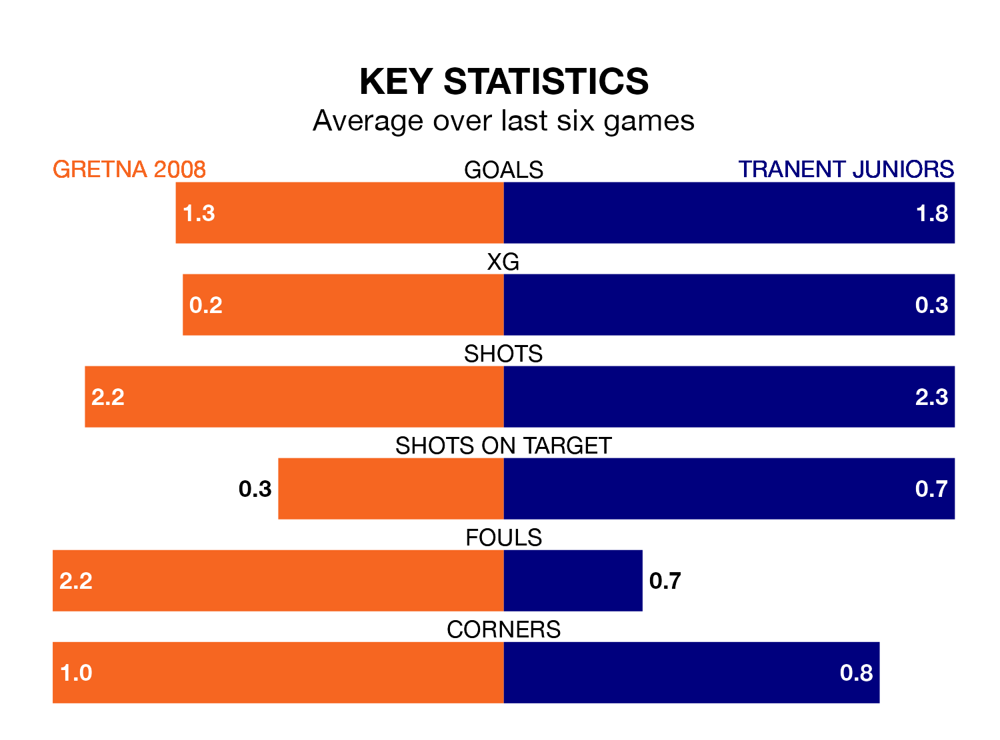

Gretna 2008 are on a terrible run ahead of hosting Tranent Juniors at Raydale Park on Saturday, with just two points collected from their last six games.
Gretna 2008 have picked up two draws and four losses in their last six Lowland Football League games, and face a Belters side whose last six games have brought three wins and one draw.
Gretna 2008 are 17th in the table after 25 games, of which they have won one and drawn four, earning seven points.
Tranent Juniors are 12 places ahead of the home side in fifth, with 13 wins and four draws putting them on 43 points.
With 18 goals in 25 games so far this season, Gretna 2008 are the league's second-lowest scorers with 0.7 goals per game. And they are conceding more than average, letting in 88 goals at a rate of 3.5 per game.
The Belters, meanwhile, are above average scorers, with 2.3 goals per game, compared to a league average of 1.7. They have conceded 1.0 goal per game.
In the last three years, Gretna 2008 and Tranent Juniors have played each other on three occasions. Gretna 2008 won one of them and Tranent Juniors the other.
Their last meeting was on September 2, when Tranent Juniors won 7-0 at home.
Gretna 2008's last match was on January 27, a 3-2 loss against East Stirlingshire.
Tranent Juniors drew 1-1 with Edusport Academy last time out, also on January 27.
Updated: 14:12 (UTC), 02/02/24